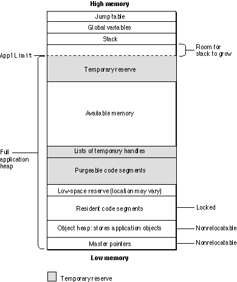

Dynamic Memory Allocation
The Macintosh user interface, the Macintosh Toolbox, and MacApp all encourage the use of dynamic memory allocation. For example, many applications allow the user to open multiple files and windows, limited only by the amount of available memory. Since the number of windows and files that can be opened on a specific machine cannot be known in advance, applications usually allocate these data structures from the heap.The Macintosh Operating System may also use the application heap to allocate memory. It doesn't notify the application when it does so, and if there isn't enough space in the heap for the system's needs, the application may crash. Some of the common uses of the application heap by the operating system include
MacApp's memory management implements an overall strategy for working in such an environment. The goals of the strategy are twofold:
- loading the application's code segments (on 68K-based machines)
- loading system resources as required, including
'WDEF'and'CDEF'resources, packages, and fonts- maintaining temporary data structures for purposes such as saving the screen area behind a pull-down menu, creating file lists for standard file dialog boxes, and allocating data structures for printing
- MacApp should always maintain enough free space in the application heap to satisfy the system's needs.
- The heap should always have enough space to carry out essential program operations such as quitting or saving documents.
Permanent and Temporary Memory
MacApp's memory management scheme, implemented in the UMemory unit, attempts to ensure that critical memory requests always succeed. To do so, it defines two kinds of memory requests: temporary memory requests and permanent memory requests. A temporary memory request is a memory request that must succeed. For example, MacApp uses temporary requests to allocate memory for code segments and for Toolbox resources such as'WDEF'and'CDEF'resources.A permanent memory request is a memory request that can be allowed to fail. Permanent requests are used for normal allocations, such as memory needed to open a document. Permanent allocations are not purged until you explicitly dispose of them. "Allocating Permanent and Temporary Memory," beginning on page 545, describes how your application can allocate temporary and permanent memory.
The naming of temporary and permanent requests can be confusing. Temporary might seem to imply that a memory request is transient and therefore less important. The exact opposite is true: MacApp makes sure temporary requests are always satisfied--only permanent requests can fail. However, a temporary allocation is temporary in the sense that it can be purged if necessary.
MacApp attempts to preserve enough space in the heap so that all temporary memory requests can be satisfied at any point in the program's execution. This ensures that requests that must succeed, such as code segment allocations, do succeed, while requests that you would merely like to succeed, such as allocation of data structures for a second (or later) document, may fail. If the temporary reserve is sufficiently large, your application will never fail when loading a code segment or system resource.
To satisfy a temporary memory request, MacApp may free other temporary items not currently in use. To keep track of temporary items, MacApp keeps four lists. The first two are used primarily by MacApp; the last two are intended for use by your application:
When there is not enough memory in the application heap to satisfy a memory request, MacApp's grow-zone function attempts to free a block of memory large enough to satisfy the request. The grow-zone function may purge items from the application's global lists, in this order:
- gCodeSegs. The global variable
gCodeSegspoints to the first object in a list ofCCodeSegmentobjects, one for each code resource in the application. It is used only by 68K applications. Each pointer stores information, including the size of the code segment, whether the code segment is resident, and a pointer to the nextCCodeSegmentobject in the list. This list is kept up to date by MacApp as segments are swapped in and out (see "MacApp's Patching for Segmentation," beginning on page 83).- gSysMemList. The
gSysMemListlist contains handles to RAM-based system resources, including all'PACK','LDEF','MDEF','WDEF', and'CDEF'resources in the system and application resource forks. You can add other resources, such as font resources, by callinggSysMemList->AddHandle(theResourceHandle);- gApp1MemList, gApp2MemList. These are lists of handles to application data or resources, initialized to
NULLby MacApp. You can add temporary handles you create to these lists using code like the following:gApp1MemList->AddHandle(theHandle); // Add togApp1MemList.gApp2MemList->AddHandle(theHandle); // Add togApp2MemList."The Grow-Zone Function," beginning on page 67, provides additional detail on MacApp's management of low-memory conditions. "Grow-Zone Hooks," beginning on page 68, describes the classes MacApp uses to keep lists of purgeable memory allocations.
- the
gCodeSegslist (see page 68)- the
gApp1MemListlist- the
gSysMemListlist- the
gApp2MemListlistDetermining the Size of Memory Reserves
MacApp determines the size for a temporary memory reserve and for an additional, last-ditch low-space reserve using the following steps:The
- During initialization of the application, MacApp determines the largest amount of temporary memory that is likely to be needed at one time while the application is running. The total includes the sum of
- the size of all segments listed in
'seg!'resources (those segments likely to be loaded when the application is performing its most code-intensive operation)- any additional memory reserve specified in
'mem!'resources supplied by your application or MacApp; additions to the temporary memory reserve are specified in the third field of the'mem!'resource- any processor-dependent temporary reserve specified in
'ppc!'(or'68k!'for 68K applications) resources (also stored in the third field)The temporary reserve total is stored in the global variable
pSzTemporaryReserve.- MacApp also determines the size for a last-ditch memory reserve, by adding the values stored in the fourth field of each
'mem!' and'ppc!'(or'68k!'for 68K applications) resources, and stores it in the global variablepSzMemReserve.- MacApp then allocates a temporary reserve,
pTemporaryReserve, based onpSzTemporaryReserve, and a low-space reserve,pMemReserve, based onpSzMemReserve.'seg!'resource is described on page 80. The'mem!','68k!', and'ppc!'resources are described in Chapter 24, "Working With Memory and Failure Handling," beginning on page 551.Figure 3-3 shows the application heap when the application is first initialized. The allocations that make up the temporary reserve are shaded. Note that the temporary reserve includes temporary handles and purgeable code segments.
Figure 3-3 The application heap, after initialization

As the user performs operations, the application may load and unload code segments and make other allocations. MacApp recalculates the temporary reserve at various times, such as when the operating system calls MacApp's grow-zone function (described in the next section). The temporary reserve is reduced by the size of any currently loaded, purgeable code segments in the
gCodeSegslist and by the size of any purgeable handles ingSysMemList,gApp1MemList, andgApp2MemList(normally, all items in these lists are purgeable). These items can be purged, if necessary, to satisfy a temporary memory request, so their size can be considered part of the temporary reserve.The Grow-Zone Function
A grow-zone function is a routine in your application that attempts to free memory in the application heap. Whenever the Memory Manager finds there isn't enough space in the heap to satisfy a memory request, it calls the grow-zone function to free additional space. It calls the grow-zone function repeatedly until there is enough free space to satisfy the request or until no more space can be freed, in which case the allocation request fails.By installing its own grow-zone function, an application can help determine which requests succeed and which fail. MacApp installs a grow-zone function (named
GrowZoneProc) as part of its overall strategy of memory management. MacApp's grow-zone function distinguishes between temporary and permanent memory requests. It won't free memory in the temporary reserve to satisfy a permanent request unless there is enough left over for any anticipated temporary requests. In this way there will always be enough space to satisfy temporary requests.
- Note
- The nature of a memory request, temporary or permanent, comes into play only when there is insufficient memory to satisfy the request, and the grow-zone function is called to free additional space. Otherwise, each request for memory, whether temporary or permanent, is satisfied from the application's available heap space, and no reorganization of the heap is necessary.
Grow-Zone Hooks
MacApp defines theCGrowZoneHookclass to supply the grow-zone function with information about memory that can be purged in an emergency. MacApp also defines the following subclasses ofCGrowZoneHook:During application initialization, MacApp uses global variables to insert grow-zone hooks for the following lists, which may contain references to purgeable blocks of memory. When purging takes place, MacApp attempts to purge memory in the order in which the hooks are stored:
CCodeSegmentGrowZoneHook- A
CCodeSegmentGrowZoneHookobject manages a list of segments (used only in 68K-based applications). ThegCodeSegmentGrowZoneHookglobal variable manages thegCodeSegslist (see page 64).CMMHandleList- A
CMMHandleListobject manages a list of handles. ThegApp1MemListandgApp2MemListglobal variables (page 64) are instantiated from this class.CSysMemList- This subclass of
CMMHandleListmanages system handle data. ThegSysMemListglobal variable (page 64) is instantiated fromCSysMemList.Your application can use the classes listed above (or subclasses you define) to create its own lists of references to blocks of memory that may be purgeable. You tell MacApp's grow-zone procedure about your list by making a call like either of the following:
- the
gCodeSegmentGrowZoneHook(which manages thegCodeSegslist)- the
gApp1MemListlist- the
gSysMemListlist- the
gApp2MemListlistmyMemList->InsertLast;// Insert last--free items in other lists first. myMemList->InsertFirst;// Insert first--free items in this list first.The grow-zone procedure's purging algorithms are described in the next section.Purging Algorithms
The grow-zone function determines whether it has been called in response to a temporary or permanent request by examining thepTemporaryAllocationflag. Since system requests are temporary and tend to occur at unpredictable times, the normal state of this flag isTRUE, indicating that the next request should be temporary.To release memory for a temporary memory request, MacApp's grow-zone routine uses the following algorithm:
To release memory for a permanent memory request, MacApp's
- The
GrowZoneProcroutine calls theCGrowZoneHook::EachPurgemethod, passing the size of the desired memory allocation.- The
EachPurgemethod traverses the objects in the grow-zone hook list, calling thePurgemethod of each.- For each list, the
Purgemethod attempts to free memory equal to or greater than the requested amount. It returns the amount actually purged.EachPurgeaccumulates the total purged memory until the total is equal to or greater than the requested amount or until all lists have been purged.EachPurgereturns the amount of memory actually purged.- The
GrowZoneProcroutine returns the amount of memory purged.GrowZoneProcuses the following algorithm:
- It determines if the temporary reserve (
pTemporaryReserve) is larger than necessary by calling theCGrowZoneHook::TotalTempSizemethod, which in turn callsTotalSizefor each grow-zone hook in the list.TotalTempSizereturns the accumulated total of temporary memory stored by the hook lists.- If the amount of temporary memory is larger than necessary, it reduces it by calling
BuildTemporaryReserve, passing the value returned byTotalTempSize.- The
BuildTemporaryReservemethod may free the low-space reserve (pLowSpaceReserve), call the Toolbox routinePurgeMemto purge memory, move large handles high in the heap, and perform other operations designed to free up as much memory as possible.- If the temporary reserve was already purged, or if rebuilding it didn't free enough memory,
GrowZoneProccalls theCGrowZoneHook::EachPurgemethod (described in the previous algorithm). It then callsBuildTemporaryReserve, attempting to free as much temporary memory as possible.- If no memory has yet been freed, and if the low-space reserve (
MemReserve) is intact,GrowZoneProccallsReleaseLowSpaceReserveto purge the low-space reserve as a final attempt to free space.GrowZoneProcreturns the amount of memory purged.Initializing MacApp's Memory Management
MacApp's memory management is initialized as part of its overall initialization. Your application either calls theInitUMacApp_Step1routine (page 88) directly, or it calls theInitUMacAppmacro, which in turn callsInitUMacApp_Step1. TheInitUMacApp_Step1routine callsUniversalStartup, which in turn callsExpandHeapto perform the first part of MacApp's memory management initialization.ExpandHeapdoes the following:Later in MacApp's initialization, the
- It examines the application's
'mem!'and'ppc!'resources to determine the size of the heap, heap increment, memory reserves, and stack. (For 68K applications, the'68K!'resource is examined in place of the'ppc!'resource.) The'mem!','ppc!', and'68K!'resources are described in Chapter 24, "Working With Memory and Failure Handling," beginning on page 551.- It sets the stack to the determined size by calling MacApp's
SetStackSpaceroutine, which in turn calls the Toolbox routineSetApplLimit.- It calls
MaxApplZone, a Toolbox routine that expands the application heap zone to include all available heap memory.InitUMacApp_Step3routine (see page 90) makes the following call:InitUMemory(callsToMoreMasters);TheInitUMemoryroutine performs the following initialization tasks:For more information on the memory management facilities provided by MacApp, see Chapter 24, "Working With Memory and Failure Handling."
- It calls the Toolbox routine
MoreMastersas many times as specified by thecallsToMoreMastersparameter, to create blocks of master pointers for the application, making every effort to allocate pointer blocks near the bottom of the heap.- It calls the
DoInitUMemoryroutine to perform the following tasks:- It creates and initializes a private heap object,
gObjectHeap, for the application. The heap object manages a private store of memory used to allocate application objects. This private store uses permanent memory.- It calls MacApp's
SetReserveSizeroutine to allocate temporary and low-space memory reserves.- It initializes the grow-zone hook global variables gApp1MemList and gApp2MemList.
- It calls the Toolbox routine
InstallGrowZoneProc, passing a universal procedure pointer to set the application's grow-zone function to MacApp'sGrowZoneProc.Initializing MacApp's Segment Management
MacApp's segment management system, described in detail beginning on page 75, is part of memory management for 68K-based machines. Segment management is initialized from theInitUMacApp_Step3routine, which makes the following call:#if qSegments // Install MacApp's segment management system. InitUSegments(); #endif // qSegmentsMacApp's segment management system is needed only for segmented 68K-based applications. MacApp uses theqSegmentsflag to control compilation of this code.The
InitUSegmentsroutine performs the following initialization tasks:
- It installs a memory hook for the grow-zone procedure, using the global variable
gCodeSegmentGrowZoneHook.- It calls the
DoInitUSegmentsroutine to perform the following actions:
- It allocates the
gCodeSegslist and stores information about the size and status of the application's code segments. ThegCodeSegslist is described in "Permanent and Temporary Memory," beginning on page 63.- It examines any
'seg!'resources in the application and, based on the information in those resources, may increase or decrease the designated size for the application's temporary and low-space memory reserves.- It may also increase the temporary reserve for code segments not in the
'seg!'resource that are marked as preload.- For applications built with 32-bit addressing or with CFM-68K (the 68K Macintosh version of the Power Macintosh Code Fragment Manager), it provides the runtime library (RTLib) with MacApp routines to call before and after a segment is loaded. For other 68K applications, it patches the Toolbox
LoadSegroutine so that the application will get control when a segment is about to be loaded. For more information, see "Segmentation Strategies," beginning on page 76.- It calls MacApp's
UnloadAllSegmentsroutine to remove any initialization segments from the heap.- It calls MacApp's
LoadResidentSegmentsroutine to load all resident segments.- It calls MacApp's
SetReserveSizeroutine, which may resize the application's temporary and low-space memory reserves.- It causes a failure if insufficient memory is left to run the application.
Allocating Objects
One of the most common uses for dynamic memory allocation is to allocate the objects that make up your application. MacApp uses pointer-based objects (which point to nonrelocatable blocks of memory) rather than handle-based objects (which point, through a double-reference system, to relocatable blocks of memory).Because most applications have many small objects, and because pointers don't move, they tend to fragment the heap. In addition, pointer allocation can be slow, because the Memory Manager will compact the entire heap to allocate a pointer with minimal fragmentation. However, MacApp provides a scheme to handle pointer-based object allocation efficiently and to avoid fragmentation, using a global object heap,
gObjectHeap.The storage space managed by the object heap is kept locked in memory and is accessed by pointers. During memory initialization, MacApp examines the
'mem!'resource to determine the initial size and the increment size for the object heap. The size of the heap is set to the sum of the values of the first field in each of the application's'mem!'resources (with a default of 32 KB). The increment for growing the heap is set to the sum of the values of the second field in each'mem!'resource (with a default increment of 30 KB).These values are chosen to give reasonable results for a normal application. If your application creates a great number of objects and your application heap becomes fragmented, you may wish to modify your
'mem!'resource to specify a larger initial size or a larger increment, or both. However, it doesn't hurt to start with a smaller size, since the heap will grow when necessary, and experimentation has shown that an initial size of 32 KB is often more efficient than an initial size of 200 KB.Creating an Object in the Object Heap
To create an object in the object heap, the MacApp class library defines two routines,operatornewandoperatordelete, that replace the standard global operators defined by C++. MacApp'soperatornewandoperatordeleteroutines callMAOperatorNewandMAOperatorDelete, which in turn call theAllocateandFreefunctions of theObjectHeapclass.This is the list of calls generated when an application creates a new object by name, using the
newoperator:new TYourObject operator new(sizeof(TYourObject)) MAOperatorNew(sizeof(TYourObject)) MemoryHeap::Allocate(sizeof(TYourObject)) ObjectHeap::DoAllocate(sizeof(TYourObject))TheObjectHeapclass descends fromBestFitHeap, which in turn descends fromMemoryHeap. TheObjectHeap::DoAllocatemethod directly allocates objects below a certain size, using a chunky approach: a chunk of memory large enough for a number of objects is allocated, then objects are handed out one at a time until a new chunk is needed. Allocated chunks are kept in a linear list.The object heap calls
BestFitHeap::DoAllocateto get memory for the chunks it uses and to try to satisfy requests it cannot handle. TheBestFitHeapclass uses an allocation mechanism that searches a binary tree of free blocks, ordered by size. If no free block is found, it expands the heap and repeats the search until the request is satisfied or until no more memory can be obtained.Freeing an Object in the Object Heap
You call the MacApp routineFreeIfObjectto free an object in the object heap (allocated with anewcall).FreeIfObjectgenerates the following list of calls:FreeIfObject(aYourObject) aYourObject->Free() aYourObject->ShallowFree() operator delete(void* obj) MAOperatorDelete(void* obj) MemoryHeap::Free(void* blk) ObjectHeap::DoFree(void* blk)Eventually the block of memory is freed according to its type--either a block in a list of chunky blocks, or a block in the binary tree of blocks stored byBestFitHeap. The memory occupied by the object becomes available for reuse.Recovering Freed Memory
In its current implementation, the object heap never shrinks. It starts out with a default size of 32 KB, and grows, if necessary, by a default increment of 30 KB. Memory allocated for the object heap is never again available to the application heap. When an object is freed, the memory it occupied is available to the object heap but the object heap itself doesn't shrink.As a result, you should avoid situations where your application creates very large blocks of data in the object heap. Even though you free them after use, the object heap may grow to a size that interferes with other program operations. For very large memory requests, you can use the
NewPermHandleroutine to allocate a handle in permanent memory. After you free the handle, the memory is again available in the application heap.Replacing MacApp's Global New and Delete Operators
When you create an object withnewor delete an object withdelete, by default you are using MacApp's global routinesoperatornew(which callsMAOperatorNew) andoperatordelete(which callsMAOperatorDelete).You can replace MacApp's global
newanddeleteoperators with the default C++ operators or with your own creation and deletion routines. To suppress inclusion of MacApp's globalnewanddeleteoperators, you include the following directive on your MacApp build line:-d qMAGlobalNew=FALSEFor more information on building MacApp, see Appendix A.Since
TObjecthas its ownoperatornewandoperatordeleteroutines, it is possible to use different globalnewanddeleteoperators without affecting allocation of MacApp objects that are based onTObject.